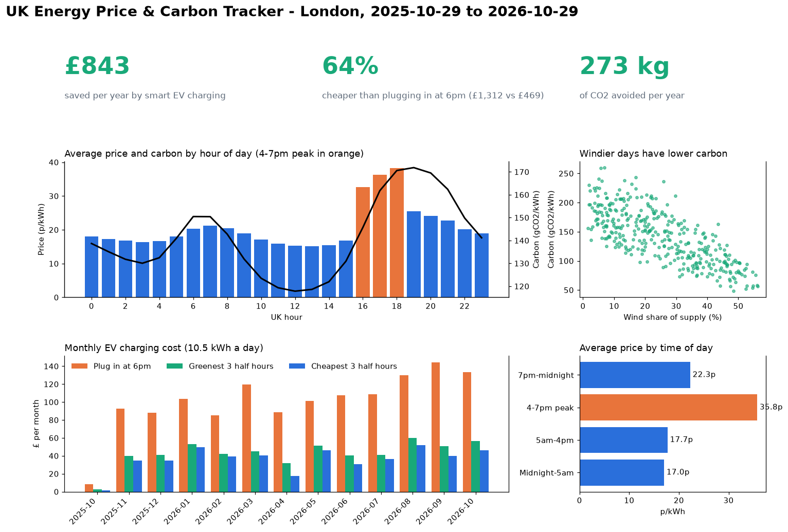

UK Energy Price & Carbon Tracker
When is electricity cheapest and cleanest, and how much does it save to use it then? A pipeline that collects a year of half-hourly prices and carbon intensity for London and answers that in SQL.

- Ingests two public APIs (Octopus Agile prices, National Grid carbon intensity) with retries, saving each day's raw response before loading.
- Loads 17,568 half-hourly periods into PostgreSQL with primary keys and upserts, so re-running a day never creates duplicates.
- A completeness check found one missing half hour, traced to an API quirk at the year boundary. Fixing the loader brought coverage to 100%.
- Result: charging an EV in each day's cheapest hours instead of at 6pm costs 64% less, about £843 a year, and avoids 273 kg of CO2.
Python · PostgreSQL · SQL · Docker · pandas · matplotlib